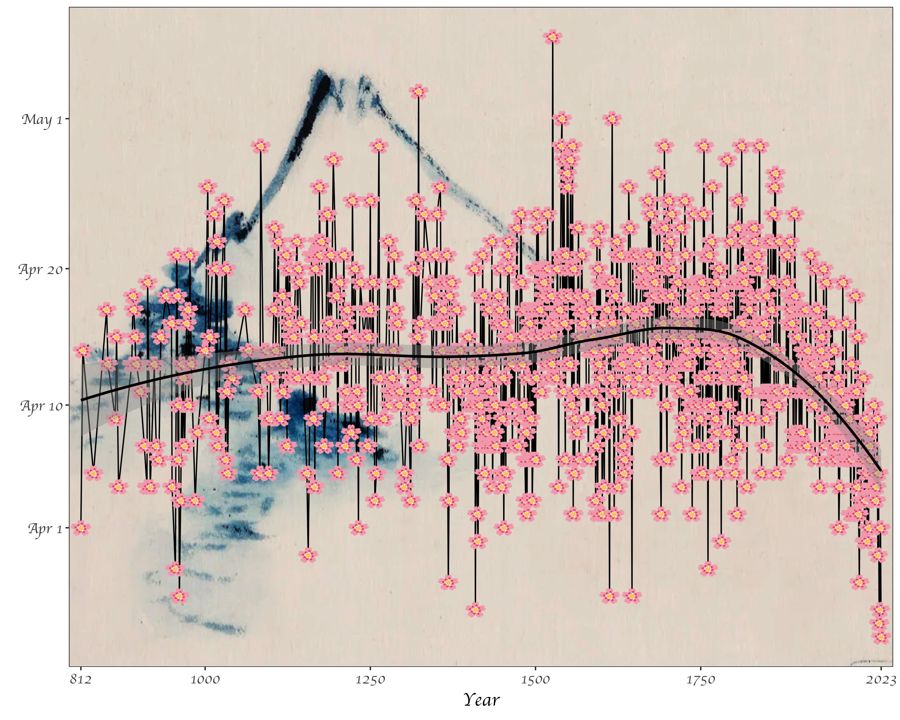

1 Getting Started with Computational Social Science
We begin by exploring the meaning of ``Computational Social Science,” and how it relates to data science, and social science more broadly. This field has changed tremendously in the last few decades, so we’ll try to orient ourselves to its history and current directions. We will load R and R Studio onto our computers and start to explore these tools.
1.1 Some Definitions
What is social science? What is data science? Why combine these?
Social science typically refers to the disciplines that study social life (mainly anthropology, economics, political science, psychology, and sociology). This class focuses mostly on the sociological aspects of social science. In other words, we focus on the study of society.
Data science is essentially statistics. For our purposes, it is also the same as computational social science. It is the study of working with data, whether these are counts or texts or any other form that can be captured by machines, usually with the purpose of drawing inferences and producing visualizations or other findings.
This course provides an introduction to data science, from a sociological perspective, for a few reasons. First, there are massive challenges for societies everywhere, and it is important that we understand them. Second, data science skills are increasingly needed to communicate across fields and domains. Third, the tools from data science may actually help us to understand and communicate the variegated influences of changing societies across the globe.
1.2 Data Science By Hand?
To be a data scientist, one must learn to think like a data scientist. Thinking like a data scientist means considering what your data represent, and what you want to communicate with these data. The data can be millions and millions of observations, or just a few. They might be digital traces, survey results, or hand-written notes. Our goal is simply to look for the truth in our data, and to communicate this as clearly as possible.
We begin with a classic example from statistics and epidemiology. John Snow, a London doctor, investigated an outbreak of cholera in London’s Soho district in 1954. By analyzing where deaths were occurring in relation to the town’s water sources, he was able to pinpoint the source of epidemic, and help the city end it. Below is a map of the city’s water sources at the time. The full map can be viewed here, and more information on the cholera outbreak can be found here.
We next turn to another classic example of data visualization. The following graphic is a representation of Napoleon’s “March on Moscow” from 1812-1813. It was created in 1869 by Charles Minard, and it is one of the most popular data visualizations out there, even being called “the best graphic ever produced” (you can decide whether you agree or not). Tufte interprets the chart as an anti-war message, as it clearly shows the massive loss of lives during this campaign.

Next, we consider a couple examples the sociologist W.E.B. Du Bois. The 1900 Paris Exhibition was a world fair that showcased humanity’s progress, challenges and possibilities at the turn of the millennium. A building was dedicated to issues of ``social economy.” Du Bois described his goal at this exhibition as follows:
“In this exhibit there are, of course, the usual paraphenalia for catching the eye — photographs, models, industrial work, and pictures. But it does not stop here; beneath all this is a carefully thought-out plan, according to which the exhibitors have tried to show: (a) The history of the American Negro. (b) His present condition. (c) His education. (d) His literature.”
– The American Negro at Paris. American Monthly Review of Reviews 22:5 (November 1900): 576.
In the first, the geography of residence by race and class is shown for a McIntosh County in Georgia. This highlights the social station of Black residents outside the town of Daren, as well as their proximity to White residents. We can compare this to demographic dot maps from recent years.

The second image shows taxable property for Black Americans in an exceptionally creative way. This shows growth in assets between 1875-1890, with little change afterward.

Considering all these examples together, we notice that each data scientist had a distinct purpose. Snow sought to convey the relationship between water service and cholera deaths. Minard showed the casualties of war. Du Bois illustrated the conditions of Black Americans in the U.S. to the rest of the world. It’s useful to remember, no matter how complicated your data are, the best data scientists are often able to reduce this information to a simple message.
1.3 Getting Started with R (or Python)
We can do some data science by hand, but statistical tools can help make our lives easier. Software such as R or Python are useful for efficiently analyzing cleaning data, analyzing data, and visualizing results. While you probably could make the plot of cherry blossom bloom times below by hand, it would take a really long time. Once you know R, you’ll be able to recreate this graph relatively easily. (As a side note, notice what this image is conveying: the trend toward earlier and earlier cherry blossom blooms as the planet warms. More on this later.)

You can install R here. Just click on the appropriate link (Mac/Windows/Linux) and follow the instructions. Even if you’ve installed R previously, you may be able to update your version by re-installing it.
Next, you’re going to want to install RStudio here. Again, you’ll have to select the right version for your machine. RStudio is the preferred integrated development environment (IDE) for most R users.
We will focus most of this course on examples using R and RStudio, but there are other good alternatives for doing data science out there! I’ll just note a few
In terms of programming, Python is an extremely popular and flexible option. It was designed and is used mostly by computer scientists, whereas R is mostly used by statisticians. The two languages therefore have lots of subtle differences in the way that one uses them, although, today it is possible to do most tasks in either. You can find instructions to see if your computer has Python installed (and download it if it does not) here.
In terms of IDEs, Anaconda is commonly used with Python. You can install Anaconda here. Anaconda gives you the option to utilize many programs, including RStudio and Jupyter Notebooks, which are another great way to share code and analysis.
Lastly, a relative newcomer in the social data science scene is a programming language called Julia. Currently, there seems to be a lot of enthusiasm about Julia due to its speed, intuitiveness, and the ability to incorporate other languages in Julia code as well. Julia allegedly combines the statistical prowess of R with the flexibility of Python. We won’t code in Julia in this class, but this is something to keep an eye on if you continue to do data science! This video might be a good place to start if you want to learn more.
1.4 Opening RStudio
When you open RStudio, you’ll have the option to start a new project. I recommend creating a project just for this class. You’ll be asked to place the project in a directory (can be new or existing). I recommend putting it in a folder just for this class (e.g. C:/Users/tyler/Documents/Soc128D/).
To start coding, you are going to want to create a new script. The script is essentially your instructions for what R should do. You can also run these directly in the command line (to the bottom of the screen with the > symbol), but it’s better to run them from the script so that you can save and edit your commands.
At the top of the script, create a header like the one below. This will help keep scripts organized as you make more of them. It’s also a good idea to save your script with a simple but descriptive name (e.g. “week1.R”). Notice all the # signs. These simply tell R that the text following them are notes rather than instructions. In a well-written script, there should be lots of # with notes explaining what the code is doing! The goal is to make it easy for your reader to understand.
1.5 Working in Base R
Now that you have your script open and a header written, it’s time to try some lines of code. We can begin with numbers and simple arithmetic. Notice that we use * for multiplication, and / for division.
## [1] 2## [1] 3## [1] 7## [1] 106## [1] 72These cases all return a singular number, but sometimes we want series of numbers or characters. These are called arrays or vectors. We can make these by using c().
## [1] 2 3 7 106 72In R, we can also assign values to labels. This will be useful as we begin to work with more and more data. To do so, we use <-. This is a bit different than other languages, such as Python, which simply use =. For the most part, you can use = in R and it will not change your output, but there are a few cases where it could matter.
# assign "sum" to the sum of a few numbers
penguin <- c(2, 3, 4+3, 53*2, 90*4/5)
# now take a look at the result
penguin## [1] 2 3 7 106 72In the previous code, each output starts with a [1]. Why is this? It is to show that our output has one row. We could also represent these same data as a \(5 \cdot 1\) matrix:
## [,1]
## [1,] 2
## [2,] 3
## [3,] 7
## [4,] 106
## [5,] 72Another form that R handles are lists! We probably won’t use lists for a bit, but these can be helpful in cases where we have multiple vectors, especially if they are differing lengths.
## [[1]]
## [1] 2 3 7
##
## [[2]]
## [1] 106
##
## [[3]]
## [1] 72It is worth noting that all of the data that we have entered so far are numeric. Other common data types include character, logical, and integer. You can try manipulating your data with functions like as.character(). For instance, what happens when you run as.logical(1) and as.logical(0)?
Another quick note here - if you are ever unsure of exactly what a function does, you can use the ? command to access the help page. For instance, ?as.integer tells us what arguments this function takes, and what output it will provide us with.
Next, we’ll try using a function. You can think about a function as a recipe. If you were telling someone how to make pancakes, you could go through each step of mixing eggs, milk, flour, and so on, or you could just say “follow this recipe” and give them the entire list of instructions. R knows some recipes/functions already. If we want to sum all the components in a vector, we don’t have to tell R to do each step, we can just tell it to do the sum() function:
## [1] 190As an exercise, you can try writing your own function.
Let’s see if it worked:
## [1] 4It worked! But why? When we assigned the action x+y to the function addition, we are telling R that given an x and a y inside addition’s parentheses, we want R to perform this task. Try writing a few functions on your own! The syntax is very important, so change this around a bit until you have an idea about what works and what doesn’t.
Another important action that we can perform in R or any other coding language is the loop. Let’s say that we want R to perform an action repetitively, rather than just once. For example, maybe we want to print each of 10 numbers.
## [1] 1
## [1] 2
## [1] 3
## [1] 4
## [1] 5
## [1] 6
## [1] 7
## [1] 8
## [1] 9
## [1] 10Using this example of a sequence from 1 to 10, we can observe what happens when we try to manipulate a vector.
## [1] 2 3 4 5 6 7 8 9 10 11Finally, we’ll just take a brief look at using apply. Specifically, we look at sapply, which applies a function over a list or vector. In this case, we get the same result as above, so the sapply method actually makes our code a bit more complicated. But it’s a good idea to remember this option, because it will be useful as our functions get more complicated.
## [1] 2 3 4 5 6 7 8 9 10 11A note on coding: when we learn to write code, we are learning a language! We will start by writing small bits, and there will be lots of moments when we don’t understand our computer (or it does not understand us, or both). This is all ok.
What is important is that we clearly annotate our coding decisions so that our code can be legible to both humans and machines. So use the # sign often!!